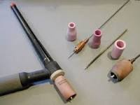
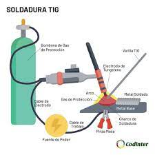
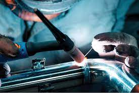
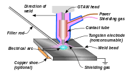
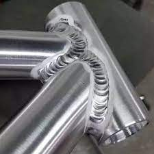

Soldadura TIG
La soldadura de arco con un electrodo infusible y protección de gas inerte se denomina comúnmente TIG (Tungsten Inert Gas). La soldadura TIG es un proceso autógeno en el que el calor se produce por un arco que choca entre la pieza de trabajo y un electrodo infusible (un electrodo que no se consume).
El electrodo está hecho de tungsteno o aleaciones de tungsteno. Estos materiales tienen temperaturas de fusión muy altas, con excelentes propiedades de emisión termoiónica que facilitan el funcionamiento del arco eléctrico.
La soldadura TIG funde los bordes de la pieza de trabajo. Material de relleno de palillo se utiliza para crear las articulaciones. Durante el proceso de soldadura, la antorcha descarga gas inerte. El flujo de gas protege el electrodo, el baño de soldadura, el arco, el material de relleno y las áreas adyacentes de la pieza de la contaminación atmosférica.
La soldadura TIG es adecuada para todo tipo de aceros al carbono, aceros de baja aleación, aleaciones inoxidables, aleaciones de níquel, aluminio y sus aleaciones, cobre y sus aleaciones, titanio, magnesio y otras aleaciones no ferrosas.
El uso de un electrodo infusible hace que la soldadura TIG sea especialmente adecuada para metales de solo unos milímetros de grosor. Debido a que el electrodo no se consume, la soldadura se puede realizar sin material de relleno. Los soldadores disfrutan de un buen control del baño de soldadura porque la visibilidad no se ve obstaculizada y no se produce transferencia de metal en el arco. El proceso es adecuado para cualquier posición de trabajo y también se puede aplicar sobre laminaciones de algunas décimas de mm de grosor.
La fuente de calor concentrada e intensa de la soldadura TIG permite velocidades de soldadura discretas y funde los bordes de la pieza de trabajo sin un riesgo excesivo de penetración. La modulación de la corriente permite a los soldadores ajustar el proceso para cumplir con requisitos especiales. El proceso TIG se usa ampliamente para crear juntas de alta calidad cuando se trabaja con materiales sensibles que no pueden tolerar las altas temperaturas necesarias para crear una soldadura.
Para soldar metales gruesos, TIG es ineficiente y rara vez se usa.
Soldadura TIG de acero inoxidable
La soldadura TIG se usa para soldar aceros inoxidables austeníticos.
Las técnicas son similares a las utilizadas para soldar aceros al carbono
y aceros de baja aleación, con algunas diferencias menores:
- Como la soldadura es mucho más fluida, los operadores deben aumentar la velocidad de soldadura según sea necesario cuando trabajen en diferentes posiciones desde el plano.
- La limpieza antes de la soldadura es mucho más importante, dada la mayor sensibilidad de estos aceros a la formación de grietas (calientes) en la zona fundida.
- Los filtros especiales para la salida de la antorcha y la tapa en el reverso del metal reducen la coloración del cordón de soldadura (oxidación de la superficie).
- Esperar unos momentos para quitar la antorcha una vez que se completa la soldadura evita la oxidación del cráter.
- La limpieza y el mecanizado de acero inoxidable siempre requieren accesorios limpios no contaminados por aceros de baja aleación.